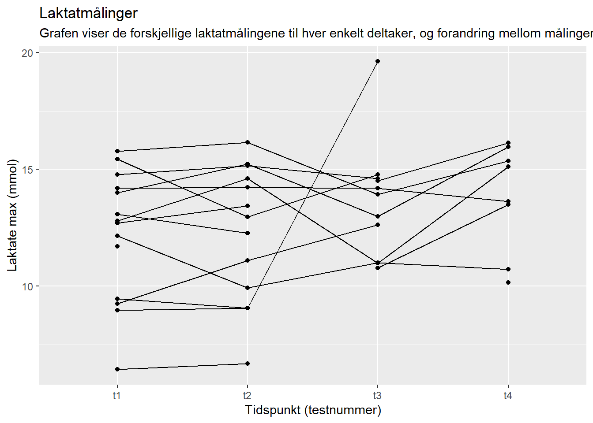
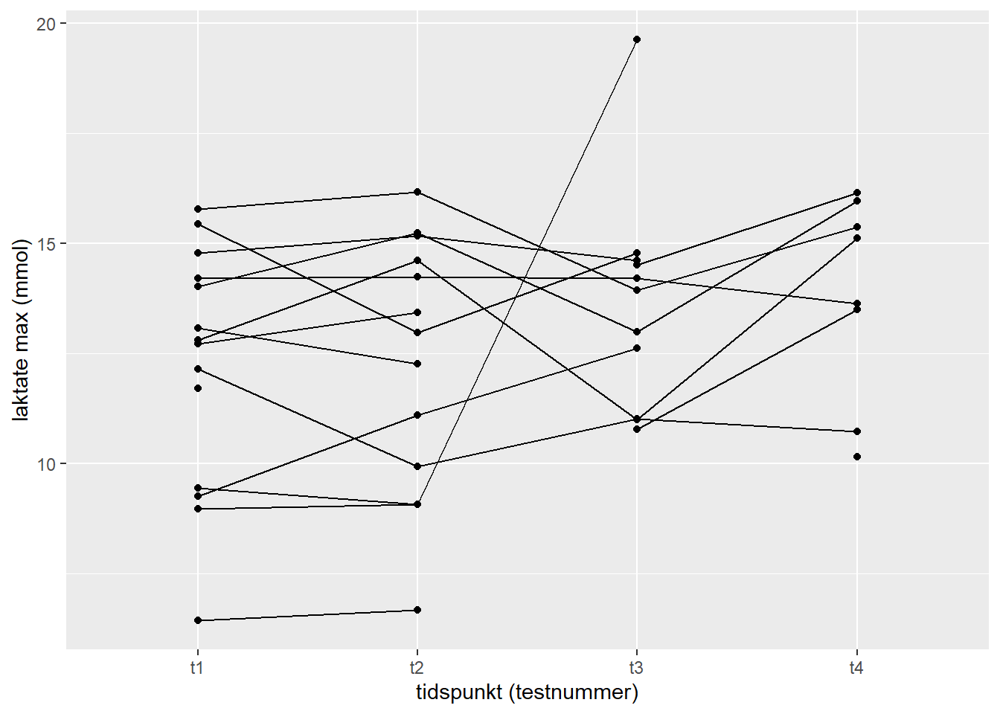

| Oppsummering av Demografiske Data | |||||||
|---|---|---|---|---|---|---|---|
| Gjennomsnitt og standardavvik per tidsperiode | |||||||
| Tidspunkt1 | Gj.sn. Alder1 | SD Alder1 | Gj.sn. Høyde1 | SD Høyde1 | Gj.sn. Vekt1 | SD Vekt1 | Antall1 |
| t1 | 25.66 | 3.64 | 179.79 | 7.63 | 79.16 | 11.85 | 14 |
| t2 | 25.66 | 3.64 | 179.79 | 7.63 | 79.27 | 11.82 | 14 |
| t3 | 26.79 | 3.69 | 178.73 | 7.91 | 80.45 | 11.92 | 11 |
| t4 | 29.06 | 7.22 | 174.62 | 6.16 | 74.74 | 12.32 | 8 |
| 1 Alle verdier er beregnet per tidsperiode. | |||||||
1 Reliabilitet og verktøy for reproduserbar vitenskapelig data
1.1 Introduksjon
I vår studie har vi gjennomført VO2max-tester over fire forskjellige dager for å gjennomføre VO2max-tester. Formålet med disse testene var å undersøke hvor konsistente resultatene er under kontrollerte forhold. For å oppnå dette har vi forsøkt å standardisere flere variabler, inkludert treningsnivå og matinntak dagen før testene. Ifølge Halperin et al. (2015) er det avgjørende å bruke standardiserte protokoller for å oppnå pålitelige resultater i fysiologiske tester.
I tillegg har vi målt laktatnivåer umiddelbart etter avslutningen av hver test for å vurdere den fysiologiske responsen. Laktatmålinger tas etter VO2max-tester for å kontrollere at utøveren har presset seg til det ytterste. På den måten kan vi sikre oss reliabilitet under testen. Det er laktatnivået og Respiratory exchange ratio (RER) vi vil fokusere på i dette forsøket. Vi vil sammenlikne disse målingene, regne ut standard avvik (SD) for å teste reliabiliteten, og så presentere resultatene ved hjelp av tabeller og grafer. Tidligere forskning har vist at laktatnivåer kan gi verdifull informasjon om anaerob kapasitet og treningsintensitet, noe som er viktig for å forstå atletisk ytelse (Hopkins (2000); Tanner & Gore (2012)).
Målet med forsøket er å lære seg å lede VO2max-tester på en reliabel og valid måte, føre og tolke data samt behandle disse i R og github for å lage reproduserbare rapporter.
1.2 Metode
1.2.1 Deltakere
Forsøket hadde i alt 14 deltakere mellom 20 og 40 år. Gruppen bestod av 3 kvinner og 11 menn. Treningsgrunnlaget til deltakerne var variert og selv om samtlige deltakere meddelte at de driver idrettsaktivitet jevnlig, er det noen som prmært trener styrketrening, ikke utholdenhet.
1.2.2 Metode:
Vi gjennomførte fire testdager. De to første var påfølgende dager, og de to siste var med en dag mellom. Hensikten med disse testdagene var å gjennomføre fysiologiske tester med høy grad av reliabilitet. Det er mange faktorer som kan påvirke validitet og reliabilitet, og det er velidg viktig å ta høyde for dette under fysiologisk testing. Vi tok flere forhåndsregler for å sikre så like testforhold som mulig.
En VO2max-test går ut på å måle hvor mange ml en person evner å ta opp og forbruke per minutt. Oksygenkravet øker lineært med økende belastning helt til personen når sin maksimale aerobe kapasitet, da kurven enten flater ut eller synker.
Maksimalt oksygenopptak beskrives enten i absolutte tall (ml/min) eller som relative tall i forhold til kroppsvekt (ml/kg/min).
VO2max-testen ble gjennomført som en trappetrinnstest der motstanden økte med 20W hvert minutt til utmattelse, eller når RPM < 60. Det registreres målinger av VO2max ved hvert 30 sek. Deltakerne startet testen på en watt tilsvarende fysisk form og erfaring med sykkel. Etter testene var ferdige ble informasjonen innhentet og plottet i et ferdig formatert Excel-dokument.
Da en tydelig protokoll ble fulgt for å etterstrebe så sikre og reliable tester som mulig, er det flere forhold som må tas underveis. Matinntak og koffeininntak fra samme dag og kvelden før ble registrert ved første test, og skulle være likt ved de påfølgende testene. Trening dagen før test ble også registrert, men lyktes ikke i å reprodusere dette da trening dagen før test 2 ble gårsdagens VO2max-test. Vi hadde også føringer om at man skulle etterstrebe lik søvn på dagene før test. For å sikre lik grad av formuleringer og verbal instruks samt grad av engasjement og heiing, hadde hver deltaker samme testleder ved hver test.
Underveis i testen måles også RER som en del av VO2max-testen. Laktatmålingene ble gjort et minutt etter testen ble avsluttet.
1.2.3 Protokoll
1.2.3.1 Før test:
Vi startet forberedelsene til testing med å gjøre klar laktatmaskinen ved å starte den, sjekke standard og evt, bytte den hvis det er tomt. Videre tok vi på hansker og monterte munnstykket til testingen, festet papir rundt og festet med neseklype for å unngå tilskitning, fant fram slangen og monterte disse til miksekammeret. Så slo vi på Lode-sykkelen, vyntus og Lode-PC
Kalibrere oksygenanalysator
Kjøre gasskalibrering, åpne gassflaske (lukkes når kalibrering er ferdig), sjekke at sensor er koblet i maskinen og starte kalibrering. Vi godtar 2% feilmargin, hvis den er høyere må man rekalibrere. Så kjører vi volumkalibrering - feilmargin på 0,2% eller under godtas. Kalibrere kammer, flytte sensor til kammer og skru av gass til slutt.
Forberede utstyr
Lage ny pasient på Vyntus og Lode; “Idr4000_h24_g1_idx”. Veie personen i så lite klær som mulig (trekke fra 300g for klær). Lage plotteark, Stille inn krankarm (172,5) og kalibrere sykkel på Lode PC. Stille inn sykkel til deltaker og fullføre plotteark. Klargjøre laktatrør, papir og teip, samt teip til neseklype. Velge protokoll på Lode PC - dersom personen ikke har erfaring med sykkel må man bli enige om en Watt man tror kan passe.
1.2.3.2 Under test:
Informasjon til deltaker
Forklare til deltakeren hva en VO2max-test er og måler, samt forklare hvordan denne skal gjennomføres. Det gjøres Målinger per 30 sek med watt-økning per 1 min. Deltakeren skal prøve å sykle med 80-100 rpm, og vi stopper test hvis under 60. VO2max-test er en prestasjonstest hvor hvert sekund teller. For å kontrollere resultatet blir det gjort pulsmåling og laktatmåling 1 min etter test med et stikk i fingeren. Etter testen spør vi også hvor deltakeren er på Borg skala (6-20). Til slutt spør vi deltakeren om den vil ha vifte på.
Informasjon underveis Deltakeren kan følge med på tiden og RPM under testen. Testleder gir oppdateringer og heier fram deltakeren. Testelederen er den samme hver gang og prøver å gjøre dette så likt som mulig på hver test for å få best mulig reliabilitet.
1.2.3.3 Etter test:
Rett etter testen er ferdig spør testleder om Borg skala for å teste validiteten på testen. Testen blir avsluttet på begge PC’ene og etter ett 1 minutt tas laktat-prøve. Tok 2 prøver for å sikre god reliabilitet.
Hente rapport:
Finne fram labbrapport på test-PC: Rapport: INN_TABELL:30SEK_MIX, søke opp id-nr. Lagre i rett mappe: F10 (nederste knapp) Lagre i rett mappe på minnepenn. Overføre til One Drive på labbPCn. Hente ut resultat fra laktat-prøve. Plotte inn resten av verdiene i excel.
Til slutt vaskes utstyret som skal vaskes og ryddes bort, før det evt. gjøres klar til ny test.
1.2.4 Standardisering:
I dette forsøket valgte vi å standardisere matinntak og koffeininntak i forkant av testen. Vi ønsket at testdeltakerne skulle spise det samme de tre siste måltidene før testen, og ha likt koffeininntak samme dag som testen.
Vi kunne også ha valgt å standardisere trening, men på grunn av forskjellig treningsopplegg hos deltakerne lot ikke dette seg gjøre.
Standardisering av tidspunkt ble gjort for oss med reservasjon av laboratorium 2. Helt standardisert blir det likevel ikke fordi i testuke 1 er testdagene rett etter hverandre, mens i testuke to er det en hviledag mellom testene.
Alle beregninger, grafer, tabeller og modeller er gjort i R (Anon, n.d.). For å sikre reproduserbarhet har alt arbeidet blitt lagret som en repository i github.
1.2.5 Mulige avvik
Deltakerne klarte ikke å standardisere kosthold, trening og søvn. På t4 tydelig lavere luftfuktighet i test-laben. Tidspunktet for t3 og t4 ble endret pga dobbeltbooket lab, slik at det ikke skjedde på samme tid på dagen som de andre testene, det ble ulik restutisjonstid fra de andre testene, og dårligere tid til å gjennomføre testene - mulig stressfaktor. Laktat-prøve tatt for sent, eller unyaktig. Unøyaktighet med synkronisert start av test i vyntus og Lode. Glemt å starte stoppeklokke til deltaker. Datainnsamlingen og testene ble utført av fire ulike grupper, og vi har ikke kontroll over utførelsen til de andre gruppene. Plottefeil - byttet RER og laktat.
1.3 Resultater
Vi valgte å se på laktat og RER i denne oppgaven. Når RER øker over 1.0 indikere det ofte at laktatproduksjonen øker. RER samfatter ofte med den anaerobe terskelen hvor laktatnivået begynner å stige raskt. Av de 14 deltakerne var det bare 8 (2 kvinner og 6 menn) som gjennomførte alle fire testene. Dette kom delvis som følge av at tidspunktene for t3 og t4 ble endret.
| Oppsummering av Laktat- og RER-målinger | ||||||
|---|---|---|---|---|---|---|
| Gjennomsnitt, standardavvik og antall per tidsperiode | ||||||
| Tidspunkt1 | Gj.sn. Laktat1 | SD Laktat1 | Antall Laktat1 | Gj.sn. RER1 | SD RER1 | Antall RER1 |
| t1 | 12.20 | 2.76 | 14 | 1.14 | 0.03 | 14 |
| t2 | 12.30 | 2.91 | 14 | 1.15 | 0.04 | 14 |
| t3 | 13.64 | 2.50 | 11 | 1.18 | 0.05 | 11 |
| t4 | 13.82 | 2.31 | 8 | 1.19 | 0.03 | 8 |
| 1 Alle verdier er beregnet per tidsperiode. | ||||||
I tabellen over vises gjennomsnittsverdiene for laktat og RER på hver av de fire testene samt SD for disse med variasjonskoeffisientene for laktat på: 7.6%, og 1.6% for RER.


Grafene viser testresultatene for hver deltaker på hver enkelt test. Her kan vi se at noen få har relativt like målinger, men de fleste har svært varierende verdier. Noe av dette kan forklares med at noen av deltakerne er aktive uttøvere som ikke ville gjennomføre flere maksimale tester på så kort tid i fare for å forstyrre treningsopplegget sitt. Noen har derfor bevisst testet submaksimalt på en eller flere tester.
1.4 Diskusjon
Variasjonskoeffisientene for laktat på: 7.6%, og 1.6% for RER indikerer at RER- målingene er betydelig mer konsistente enn laktatmålingene. Hvor RER har høy reliabilitet og laktat har betraktelig lavere reliabilitet. Dette er også noe som gjenspeiles på standardavvikene til de respektive målingene.
Med tanke på de demografiske variablene ser vi at det er noe forskjell i alder, høyde og vekt mellom tidspunktene og kjønnene. Det er også få kvinner med. Det er en særlig større variasjon i alder på t4 (7.22 år.). Dette har mest sannsynlig sammenheng med at de to siste og spesielt t4 hadde færre deltagere. Dette vil påvirke reltabiliteten negativt.
Samlet sett viser dataen at RER-målingene er høyst reliable og at laktatmålingene er mindre konsistente. Dette gir mening ettersom det er liten sjanse for feil i målingene av RER som gjøres av vyntus. Måling av laktat er det testleder som gjør, og med manglende erfaring vil det naturlig nok være større sjanse for avvik i utførelsen. Vi tror en av de mest sannsynlige årsakene er vår uerfarenhent med å ta laktatprøver. Tid etter endt test før prøven ble tatt, forurensning av for eksempel svette i blod eller prøver med for lite eller for mye blod kan være mulige feilkilder. Det trenger likevel ikke å bety at laktatmålingene er helt ubrukelige, men at de bør tolkes med forsiktighet og i sammenheng med andre fysiologiske markører som RER.
Den store variasjonen i resultatene for enkeltdeltakere som kommer fram i grafene tyder på at deltakerne har hatt stor variasjon i hvor mye de har presset seg under testene. Som vi skriver i protokollen er VO2max-tester prestasjonstester hvor maksimal ytelse er viktig for et reliabelt resultat. De varierende verdiene vi presenterer her tyder derfor på at reliabiliteten for VO2max-testene også trolig er lav. Dette gjør at det er vanskelig å si hva vi kan forvente av repeterte målinger i denne gruppen. En måte å bedre reliabiliteten på er å fjerne resultatene til deltakere som svinger mye i RER og laktatmålinger, eller å fortsette forsøket med økt fokus på maksimal ytelse i framtidige tester.
Anon (n.d.). R: A language and environment for statistical computing.
Halperin I, Pyne DB & Martin DT (2015). Threats to internal validity in exercise science: A review of overlooked confounding variables. Int J Sports Physiol Perform 10, 823–829.
Hopkins WG (2000). Measures of reliability in sports medicine and science. Sports Med 30, 1–15.
Tanner RK & Gore CJ (2012). Physiological tests for elite athletes, 2nd edn. Human Kinetics. Available at: https://books.google.no/books?id=0OPIiMks58MC.